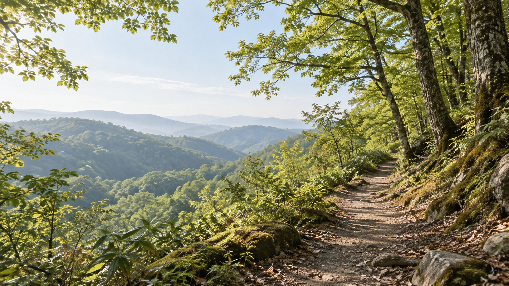

行き先を決める前に
登る山の地域に、クマはいる？
日本の山を一括りにせず、まず北海道・本州・四国・九州から地域を選びましょう。その後、行き先の山の最新情報を自治体や現地管理者で確認します。

ツキノワグマの地域へ行く場合
山に入る前と、入ってからの基本
以下は長野県によるツキノワグマの案内を要約したものです。北海道のヒグマへの適用は確認していません。
人の存在を知らせる
クマ鈴、ラジオ、笛など、自然界にはない音の出るものを鳴らします。遭遇を防ぐ保証ではありません。
単独行動を避ける
単独行動を避け、茂みの近くでの行動は極力避けます。
痕跡を見たら引き返す
クマの足跡やフンを見つけたら、それ以上近づかず引き返します。
現地の最新情報
警報は行き先ごとに確認する
English information
English readers can start with the overview and the practical guide.